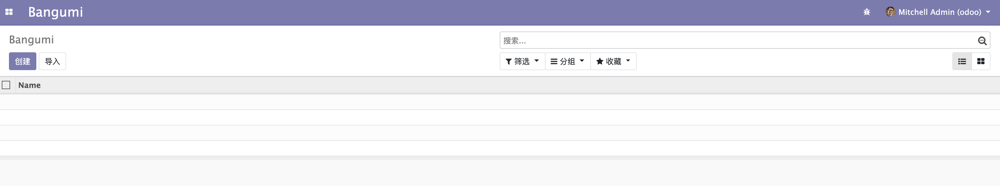
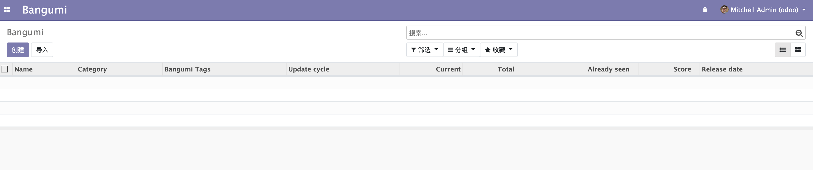

列表视图 List View
在上一章节中，我们已经为 bangumi 应用创建了入口菜单和菜单对应的动作。如果我们还未给动作对应的模型定义列表视图和表单视图，Odoo 会默认为我们生成列表视图。

默认视图只显示了 Name 字段，显然是不满足我们的需求的，接下来我们需要尝试给对应的模型自定义一个列表视图。
同样的进入 bangumi 模块下的 views 目录，并打开 views.xml。如果没有的话就新建一个 （这里的文件名不一定要使用 views.xml 也可以使用别的。）。
views
├── menus.xml
├── templates.xml
└── views.xml
打开之后我们需要在 <odoo><data>{在这里定义}</data></odoo> 中间定义一个 tree 视图也就是我们的 List View。
tree 视图的定义如下所示：
<odoo>
<data>
<record model="ir.ui.view" id="view_bangumi_bangumi_list">
<field name="name">bangumi.list</field>
<field name="model">bangumi.bangumi</field>
<field name="arch" type="xml">
<tree>
<field name="name"/>
<field name="category_id"/>
<field name="tag_ids" widget="many2many_tags"/>
<field name="score"/>
<field name="current"/>
<field name="total"/>
<field name="already_seen"/>
<field name="release_date"/>
<field name="update_cycle"/>
</tree>
</field>
</record>
</data>
</odoo>
这里面的数据和结构我大致介绍一下：
第 3 行的 model 属性，定义了这是一个 ir.ui.view 也就是 odoo 的视图，id 属性指名了这个视图的唯一标示，所以在写的时候要注意它的命名和唯一性。如果不知道自己定义的视图 id 该怎么命名，可以参考官方的模块命名格式。
第 4 行的 name 是这个视图的名字，这个没有唯一约束。
第 5 行的 model 指明了这个视图关联的是哪个模型，这里关联的是 bangumi.bangumi 模型。
第 6 行是固定写法，第 7 行和第 17 行的 <tree></tree> 标签表明了这是一个列表视图。
第 8 行到第 16 行是这个视图需要展示的字段。其中 10 行的 <field name="tag_ids" widget="many2many_tags"/> 指明了这个字段使用一个叫 many2many_tags 的挂件（widget）来展示（odoo 中还有很多的 widget 这里就不一一介绍了，想了解的可以在官方源码中搜索 widget 关键字）。
视图定义好之后，我们该如何使用呢。在使用之前我先介绍一下 odoo 的菜单、动作和视图的关系。
在上一章节中，我们定义了 menuitem 和 act_window，他们分别代表了菜单和动作。从 menuitem 的定义中有 action 属性这个特点，我们不难看出菜单是入口，它可以关联动作。
那么视图应该关联在哪里呢，有些同学可能觉得是菜单，但视图实际上是要关联动作。因为我们在点击菜单后触发动作，随后跳转到了一个默认的 List View 视图。在 act_window 有一个 view_id 的属性，用于显式指定关联的视图，当然默认是关联这个 act_window 的 model 模型所对应的默认视图。
接下来我们给 act_window 加上 view_id 来显式指定成我们刚刚定义的视图。
<act_window
id="act_bangumi_view"
name="Bangumi"
res_model="bangumi.bangumi"
view_mode="tree,kanban,form"
view_id="view_bangumi_bangumi_list"
/>
然后就可以升级我们的 bangumi 模块看看效果，当然升级之前别忘了检查 __manifest__.py 是否已经包含了我们定义的 xml。
升级完成后重新打开或刷新页面就可以看到效果了。

⚠️ List View 也叫 Tree View，后文所有提到 Tree 视图的部分就是列表视图。